Métodos de Monte Carlo em inferência estatística
Testes de hipótese de Monte Carlo
Fernando P. Mayer
1 Introdução
Besag e Clifford (1989) definiram que um teste de Monte Carlo generalizado é um que possui as seguintes características:
- Um conjunto de dados observado, é apenas um entre muitos conjuntos que poderiam ter ocorrido
- Todos os possíveis conjuntos de dados podem ser gerados a partir de uma série de mudanças incrementais nos dados (randomização)
- Aqui vamos assumir que todos os possíveis conjuntos de dados podem ser gerados a partir de algum modelo probabilístico (Monte Carlo)
- A hipótese nula de interesse afirma que todos os possíveis conjuntos de dados possuem a mesma probabilidade de ocorrência
- Todo conjunto de dados possível pode ser resumido por alguma estatística de teste \(S\)
- Um teste de hipótese consiste em calcular uma medida (estatística de teste) e verificar o quanto ela é provável dentro do cenário de ocorrências puramente ao acaso, supondo que a hipótese nula é verdadeira.
- Se a conclusão for de que é um valor dos mais prováveis, então não existem evidências para rejeitar a hipótese nula.
- Se for dos resultados mais extremos, então existem evidências de que a hipótese nula não é verdadeira
Partindo dessa ideia, um teste de hipótese de Monte Carlo pode ser formulado da seguinte maneira:
- Calcule a estatística de teste para a amostra
- Supondo que a hipótese nula é verdadeira, simule valores com as mesmas características do modelo probabilístico sendo testado (sob \(H_0\))
- Repita o passo (2) um número \(N\) grande de vezes, e calcule a estatística de teste em todos os passos
- Com a distribuição dos \(N\) valores da estatística de teste (supondo \(H_0\)) verdadeira, calcule a proporção de valores iguais ou mais extremos que a estatística de teste da amostra
- O último passo pode ser interpretado como o \(p\)-valor de Monte Carlo, ou \(p\)-valor empírico.
- Proporções altas mostram que a estatística de teste amostral não é tão extrema, o que favorece \(H_0\)
- Proporções baixas indicam que a estatística de teste é extrema (pouca probabilidade de ocorrer simplesmente ao acaso), por isso a hipótese nula deve ser pouco plausível
2 Nível descritivo
- Em geral, \(\alpha\) é pré-fixado para construir a regra de decisão.
- Uma alternativa é deixar em aberto a escolha de \(\alpha\) para quem for tomar a decisão.
- A ideia é calcular, supondo que a hipótese nula é verdadeira, a probabilidade de se obter estimativas iguais ou mais extremas do que aquela fornecida pela amostra.
- Essa probabilidade é chamada de nível descritivo, denotada por \(\alpha^*\) (ou \(p\)-valor).
- Valores pequenos de \(\alpha^*\) evidenciam que a hipótese nula é falsa.
- O conceito de “pequeno” fica para quem decide qual \(\alpha\) deve usar para comparar com \(\alpha^*\).
Para testes unilaterais, sendo \(H_0: \mu = \mu_0\), a expressão de \(\alpha^*\) depende da hipótese alternativa:
\[\begin{align*} \alpha^* &= P(\bar{X} < \bar{x}_{obs} \, | \, H_0 \text{ verdadeira}) \quad \text{para } H_a: \mu < \mu_0 \\ \alpha^* &= P(\bar{X} > \bar{x}_{obs} \, | \, H_0 \text{ verdadeira}) \quad \text{para } H_a: \mu > \mu_0 \end{align*}\]
Para testes bilaterais, temos \(H_0: \mu = \mu_0\) contra \(H_0: \mu \neq \mu_0\), a definição do nível descritivo depende da relação entre \(\bar{x}_{obs}\) e \(\mu_0\):
\[\begin{align*} \alpha^* &= 2 \times P(\bar{X} < \bar{x}_{obs} \, | \, H_0 \text{ verdadeira}) \quad \text{se } \bar{x}_{obs} < \mu_0 \\ \alpha^* &= 2 \times P(\bar{X} > \bar{x}_{obs} \, | \, H_0 \text{ verdadeira}) \quad \text{se } \bar{x}_{obs} > \mu_0 \\ \end{align*}\]
Como estamos calculando a probabilidade para apenas uma das caudas, então esse valor é multiplicado por 2.
3 Teste de hipótese para a média
3.1 Variância conhecida
## Simula X ~ N(10, 1)
set.seed(2019-10-29)
n <- 30
x <- rnorm(n, 10, 1)
(med <- mean(x))
# [1] 10.08421
(s2 <- var(x))
# [1] 1.158774
## Teste para
## H0: mu = 10
## Ha: mu != 10
mu0 <- 10
## Estatistica de teste
(zcalc <- (med - mu0)/sqrt(1/n))
# [1] 0.4612242
## Valor critico
(zcrit <- qnorm(.025, mean = 0, sd = 1))
# [1] -1.959964
## p-valor
2 * pnorm(zcalc, mean = 0, sd = 1, lower.tail = FALSE)
# [1] 0.6446378
## Usando simulacao de Monte Carlo
N <- 10000
## Siulando direto da distribuicao amostral, sob H0
am <- rnorm(N, mean = mu0, sd = 1/sqrt(n))
## Simula da populacao e calcula as medias, sob H0
am2 <- replicate(N, mean(rnorm(n, mu0, 1)))
## Visualização
par(mfrow = c(1, 2))
hist(am, main = "Distribuição amostral")
abline(v = med, col = 2)
hist(am2, main = "Média de amostras")
abline(v = med, col = 2)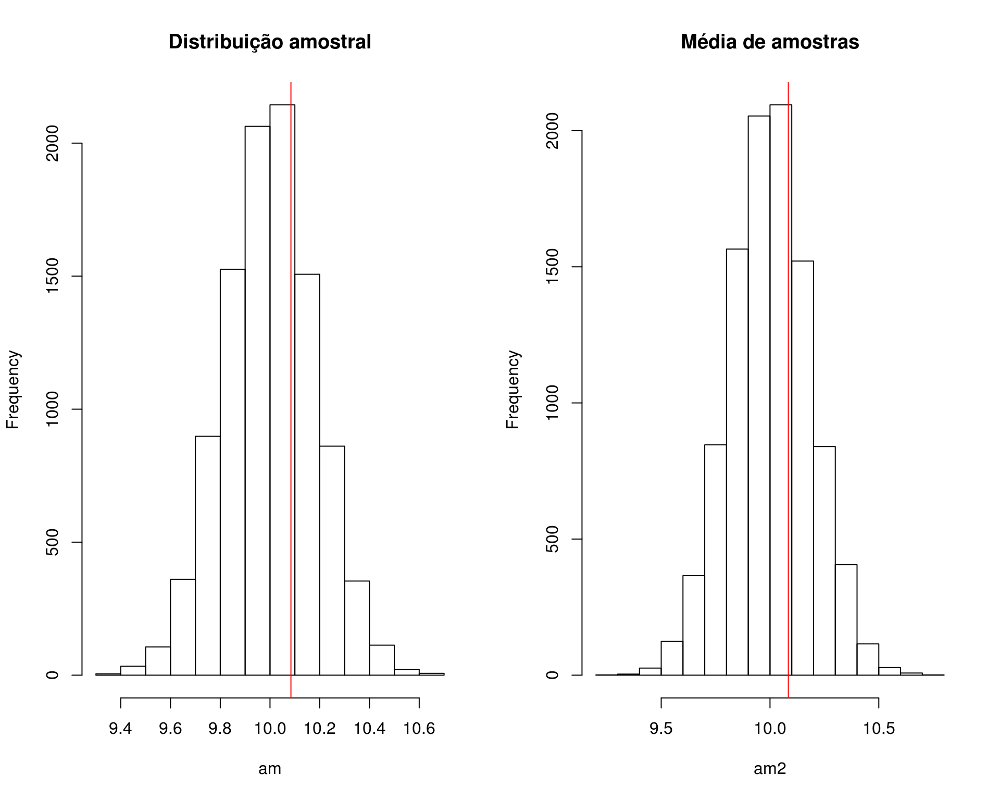
par(mfrow = c(1, 1))
## p-valor empírico
2 * sum(am >= med)/N
# [1] 0.6336
2 * sum(am2 >= med)/N
# [1] 0.646
## Padroniza a distribuição para N(0,1)
zpad <- (am - mu0)/sqrt(1/n)
hist(zpad)
abline(v = zcalc, col = 2)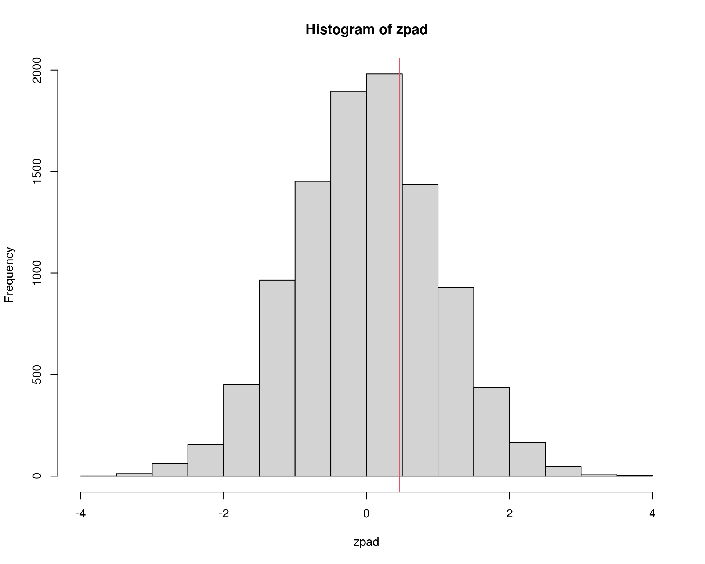
3.2 Variância desconhecida
## Simula de N(10, 1), mas agora asumindo que a variância é desconhecida
set.seed(2019-10-29)
n <- 30
x <- rnorm(n, 10, 1)
(med <- mean(x))
# [1] 10.08421
(s2 <- var(x))
# [1] 1.158774
## Teste para
## H0: mu = 10
## Ha: mu != 10
mu0 <- 10
t.test(x = x, alternative = "two.sided", mu = mu0)
#
# One Sample t-test
#
# data: x
# t = 0.42846, df = 29, p-value = 0.6715
# alternative hypothesis: true mean is not equal to 10
# 95 percent confidence interval:
# 9.68225 10.48617
# sample estimates:
# mean of x
# 10.08421
## Estatística de teste
(tcalc <- (med - mu0)/sqrt(s2/n))
# [1] 0.4284624
## Valor crítico
(tcrit <- qt(.025, df = n - 1))
# [1] -2.04523
## p-valor
2 * pt(tcalc, df = n - 1, lower.tail = FALSE)
# [1] 0.6714802
## Teste por simulação de Monte Carlo
N <- 10000
## Simula direto da distribuição amostral da média
am <- rnorm(N, mean = mu0, sd = sqrt(s2/n))
## Calcula média de amostras de tamanho n da população, com a variância
## estimada a partir dos dados
am2 <- replicate(N, mean(rnorm(n, mu0, sqrt(s2))))
## Visualização
par(mfrow = c(1, 2))
hist(am, main = "Distribuição amostral")
abline(v = med, col = 2)
hist(am2, main = "Média de amostras")
abline(v = med, col = 2)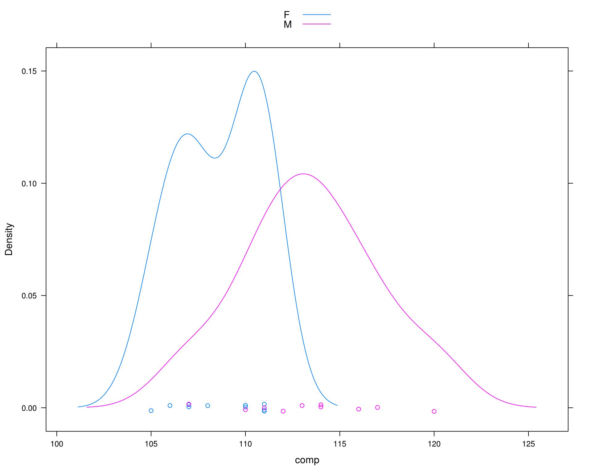
par(mfrow = c(1, 1))
## p-valor empírico
2 * sum(am >= med)/N
# [1] 0.6566
2 * sum(am2 >= med)/N
# [1] 0.6678
## Padroniza a distribuição para t(n - 1)
tpad <- (am - mu0)/sqrt(s2/n)
hist(tpad)
abline(v = tcalc, col = 2)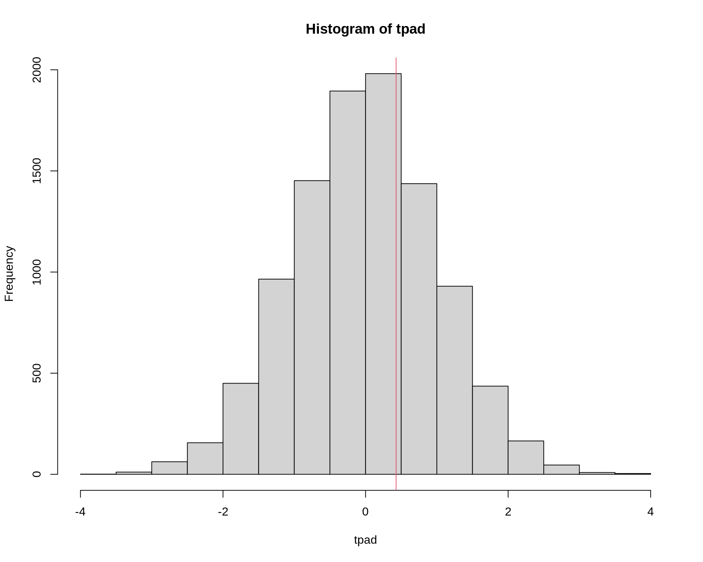
3.3 Comparação de duas médias (variâncias iguais)
## Exemplo adaptado de Manly (1997)
## Comparação do comprimento da mandíbula de chacais machos e fêmeas
set.seed(2)
machos <- c(120, 107, 110, 116, 114, 111, 113, 117, 114, 112)
## Simula diferença para as femeas
femeas <- rnorm(10, mean(machos) - 2, sd = sd(machos))
da <- data.frame(comp = c(machos, femeas),
sexo = c(rep("M", 10), rep("F", 10)))
densityplot(~comp, groups = sexo, data = da, auto.key = TRUE)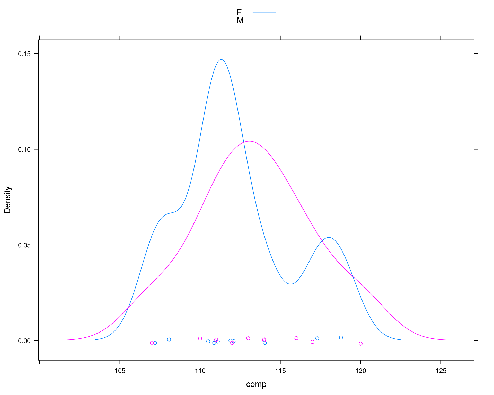
## Média por sexo
tapply(da$comp, da$sexo, mean)
# F M
# 112.185 113.400
## Diferença das médias
diff(tapply(da$comp, da$sexo, mean))
# M
# 1.214975
## Média de cada sexo
(m1 <- mean(machos))
# [1] 113.4
(m2 <- mean(femeas))
# [1] 112.185
## Diferença entre as médias amostrais
(med.amostral <- m1 - m2)
# [1] 1.214975
## Calcula o desvio padrão ponderado
n1 <- length(machos)
v1 <- var(machos)
n2 <- length(femeas)
v2 <- var(femeas)
(s.pond <- sqrt(((n1 - 1) * v1 + (n2 - 1) * v2)/(n1 + n2 - 2)))
# [1] 3.690024
## Teste de hipótese para
## H0: mu1 <= mu2
## Ha: mu1 > mu2
mu0 <- 0
t.test(x = machos, y = femeas, alternative = "greater",
var.equal = TRUE, mu = mu0)
#
# Two Sample t-test
#
# data: machos and femeas
# t = 0.73625, df = 18, p-value = 0.2355
# alternative hypothesis: true difference in means is greater than 0
# 95 percent confidence interval:
# -1.646627 Inf
# sample estimates:
# mean of x mean of y
# 113.400 112.185
## Estatística de teste
(tcalc <- (m1 - m2)/(s.pond * sqrt(1/n1 + 1/n2)))
# [1] 0.7362465
## Valor crítico
(tcrit <- qt(.025, df = n1 + n2 - 2, lower.tail = FALSE))
# [1] 2.100922
## p-valor
pt(tcalc, df = n1 + n2 - 2, lower.tail = FALSE)
# [1] 0.2355338
## Teste por simulação de Monte Carlo
N <- 10000
## Simula direto da distribuição amostral
am <- replicate(N, rnorm(1, mu0, s.pond * sqrt(1/n1 + 1/n2)))
## Para simular direto dos dados, partimos da hipótese nula de que as
## duas médias são iguais, e as variâncias são as mesmas. Nesse caso,
## podemos simular assumindo que a média é igual à média dos machos, e
## da mesma forma, podemos assumir que a média da população é igual a
## média das fêmeas.
## Usando media dos machos: obtém a diferença das médias entre machos e
## fêmeas, assumindo que a média na população é igual a média dos machos
am.machos <- replicate(
N, diff(tapply(rnorm(20, m1, s.pond), da$sexo, mean))
)
## Usando media das femeas: obtém a diferença das médias entre machos e
## fêmeas, assumindo que a média na população é igual a média dos fêmeas
am.femeas <- replicate(
N, diff(tapply(rnorm(20, m2, s.pond), da$sexo, mean))
)
## Visualização
par(mfrow = c(1, 3))
hist(am, main = "Distribuição amostral")
abline(v = med.amostral, col = 2)
hist(am.machos, main = "Média de amostras (machos)")
abline(v = med.amostral, col = 2)
hist(am.femeas, main = "Média de amostras (fêmeas)")
abline(v = med.amostral, col = 2)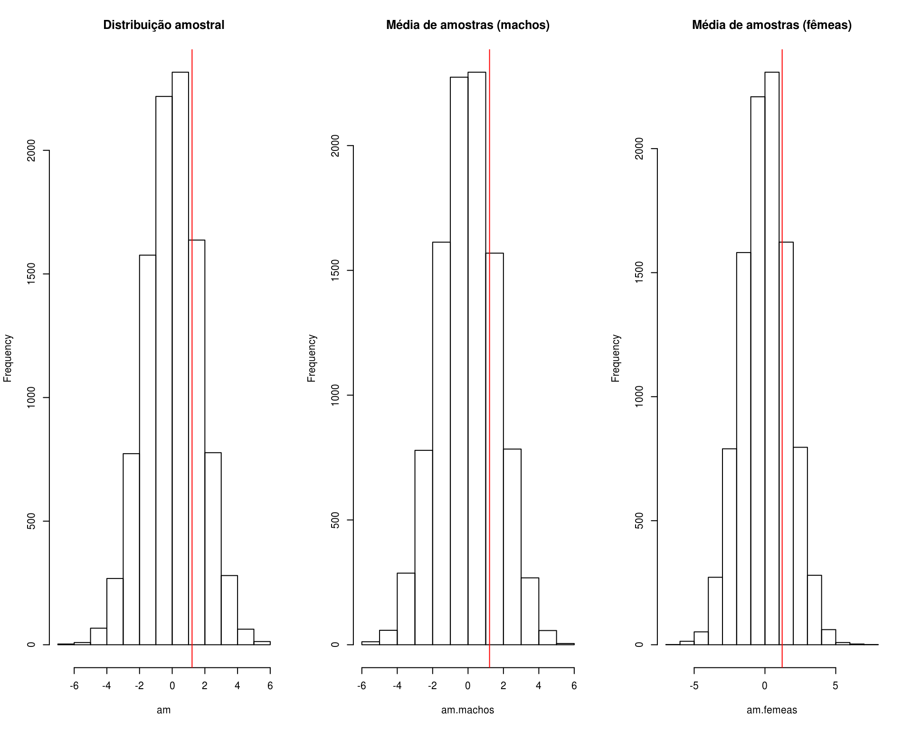
par(mfrow = c(1, 1))
## p-valor empírico
sum(am >= med.amostral)/N
# [1] 0.2342
sum(am.machos >= med.amostral)/N
# [1] 0.225
sum(am.femeas >= med.amostral)/N
# [1] 0.2361
## Padroniza a distribuição para t(n1 + n2 - 2)
tpad <- (am - mu0)/(s.pond * sqrt(1/n1 + 1/n2))
hist(tpad)
abline(v = tcalc, col = 2)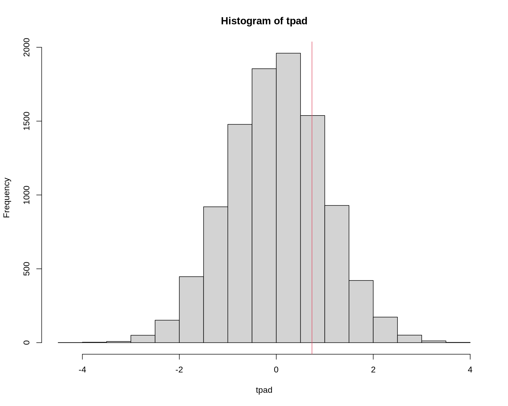
Quando o método pode não ser muito bom
## Exemplo original do Manly (1997)
machos <- c(120, 107, 110, 116, 114, 111, 113, 117, 114, 112)
femeas <- c(110, 111, 107, 108, 110, 105, 107, 106, 111, 111)
da <- data.frame(comp = c(machos, femeas),
sexo = c(rep("M", 10), rep("F", 10)))
densityplot(~comp, groups = sexo, data = da, auto.key = TRUE)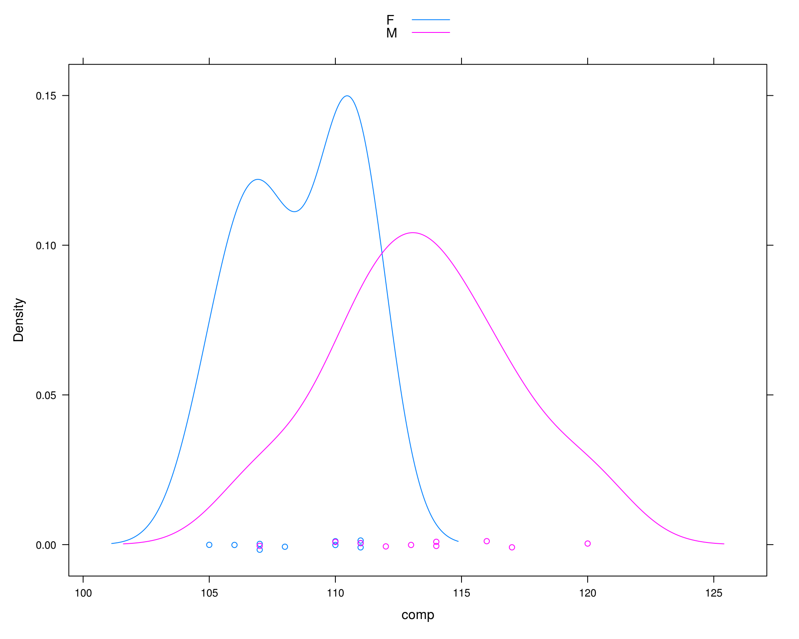
## Média por sexo
tapply(da$comp, da$sexo, mean)
# F M
# 108.6 113.4
## Diferença das médias
diff(tapply(da$comp, da$sexo, mean))
# M
# 4.8
## Média de cada sexo
(m1 <- mean(machos))
# [1] 113.4
(m2 <- mean(femeas))
# [1] 108.6
## Diferença entre as médias amostrais
(med.amostral <- m1 - m2)
# [1] 4.8
## Calcula o desvio padrão ponderado
n1 <- length(machos)
v1 <- var(machos)
n2 <- length(femeas)
v2 <- var(femeas)
(s.pond <- sqrt(((n1 - 1) * v1 + (n2 - 1) * v2)/(n1 + n2 - 2)))
# [1] 3.080404
## Teste de hipótese para
## H0: mu1 <= mu2
## Ha: mu1 > mu2
mu0 <- 0
t.test(x = machos, y = femeas, alternative = "greater",
var.equal = TRUE, mu = mu0)
#
# Two Sample t-test
#
# data: machos and femeas
# t = 3.4843, df = 18, p-value = 0.001324
# alternative hypothesis: true difference in means is greater than 0
# 95 percent confidence interval:
# 2.411156 Inf
# sample estimates:
# mean of x mean of y
# 113.4 108.6
## Estatística de teste
(tcalc <- (m1 - m2)/(s.pond * sqrt(1/n1 + 1/n2)))
# [1] 3.484324
## Valor crítico
(tcrit <- qt(.025, df = n1 + n2 - 2, lower.tail = FALSE))
# [1] 2.100922
## p-valor
pt(tcalc, df = n1 + n2 - 2, lower.tail = FALSE)
# [1] 0.001323634
## Teste por simulação de Monte Carlo
N <- 10000
## Simula direto da distribuição amostral
am <- replicate(N, rnorm(1, mu0, s.pond * sqrt(1/n1 + 1/n2)))
## Usando media dos machos
am.machos <- replicate(
N, diff(tapply(rnorm(20, m1, s.pond), da$sexo, mean))
)
## Usando media das femeas
am.femeas <- replicate(
N, diff(tapply(rnorm(20, m2, s.pond), da$sexo, mean))
)
## Visualização
par(mfrow = c(1, 3))
hist(am, main = "Distribuição amostral")
abline(v = med.amostral, col = 2)
hist(am.machos, main = "Média de amostras (machos)")
abline(v = med.amostral, col = 2)
hist(am.femeas, main = "Média de amostras (fêmeas)")
abline(v = med.amostral, col = 2)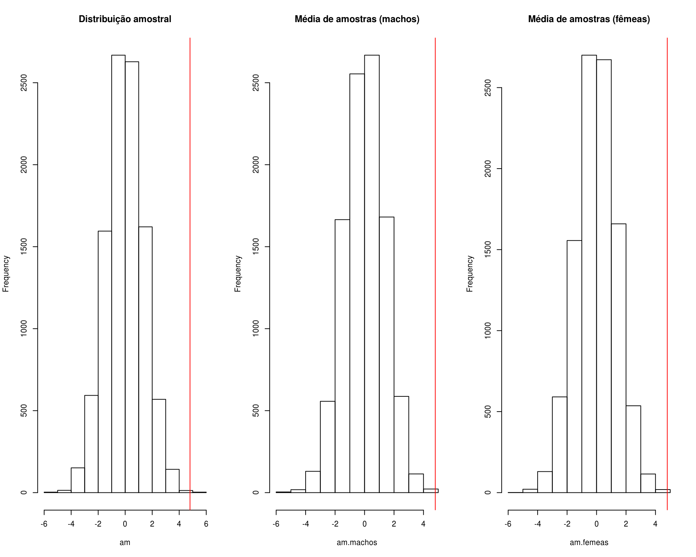
par(mfrow = c(1, 1))
## p-valor empírico
sum(am >= med.amostral)/N
# [1] 3e-04
sum(am.machos >= med.amostral)/N
# [1] 1e-04
sum(am.femeas >= med.amostral)/N
# [1] 0
## Isso mostra que a simulação pode não conseguir representar casos
## extremos, embora a conclusão não seria alterada.
## Padroniza a distribuição para t(n1 + n2 - 2)
tpad <- (am - mu0)/(s.pond * sqrt(1/n1 + 1/n2))
hist(tpad)
abline(v = tcalc, col = 2)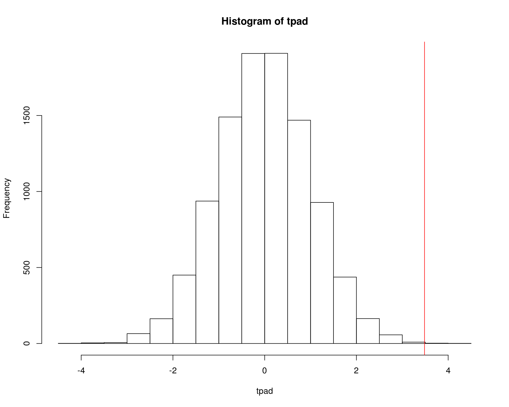
4 Teste de hipótese para a proporção
## Dados: y = 32 sucessos em n = 250 tentativas
n <- 250
y <- 32
## Proporção amostral
(theta.hat <- y/n)
# [1] 0.128
## Teste de hipótese
## H0: theta = 0.15
## Ha: theta < 0.15
theta0 <- 0.15
## A aproximação pela normal funciona bem quando
## np >= 5 e n(1-p) >=5
n * theta.hat
# [1] 32
n * (1 - theta.hat)
# [1] 218
## Estatistica de teste (aproximação pela normal)
(zcalc <- (theta.hat - theta0)/sqrt((theta0 * (1 - theta0))/n))
# [1] -0.9741764
## Com alpha = 0.05, o valor cítico é
(zcrit <- qnorm(.05))
# [1] -1.644854
## p-valor
pnorm(zcalc)
# [1] 0.1649845
pbinom(y, size = n, prob = theta0) # teste exato
# [1] 0.1890489
binom.test(x = 32, n = 250, p = 0.15, alternative = "less")
#
# Exact binomial test
#
# data: 32 and 250
# number of successes = 32, number of trials = 250, p-value = 0.189
# alternative hypothesis: true probability of success is less than 0.15
# 95 percent confidence interval:
# 0.0000000 0.1680901
# sample estimates:
# probability of success
# 0.128
## Aproximação (com correção de continuidade)
prop.test(x = 32, n = 250, p = 0.15, alternative = "less")
#
# 1-sample proportions test with continuity correction
#
# data: 32 out of 250, null probability 0.15
# X-squared = 0.78431, df = 1, p-value = 0.1879
# alternative hypothesis: true p is less than 0.15
# 95 percent confidence interval:
# 0.0000000 0.1689838
# sample estimates:
# p
# 0.128
## Teste por simulação de Monte Carlo
N <- 10000
## Simula direto da distribuição amostral da proporção (aproximada pela
## normal)
am <- rnorm(N, mean = theta0, sd = sqrt((theta0 * (1 - theta0))/n))
## Simula direto da população, sob theta0
am2 <- rbinom(N, size = n, prob = theta0)
## Calcula a proporção amostral
am2 <- am2/n
## Visualização
par(mfrow = c(1, 2))
hist(am, main = "Distribuição amostral", freq = FALSE)
## Aproximação pela normal
curve(dnorm(x, theta0, sqrt((theta0 * (1 - theta0))/n)),
from = 0, to = .3, add = TRUE, col = 2)
abline(v = theta.hat, col = 2)
hist(am2, main = "Proporções de amostras", freq = FALSE)
## Aproximação pela normal
curve(dnorm(x, theta0, sqrt((theta0 * (1 - theta0))/n)),
from = 0, to = .3, add = TRUE, col = 2)
abline(v = theta.hat, col = 2)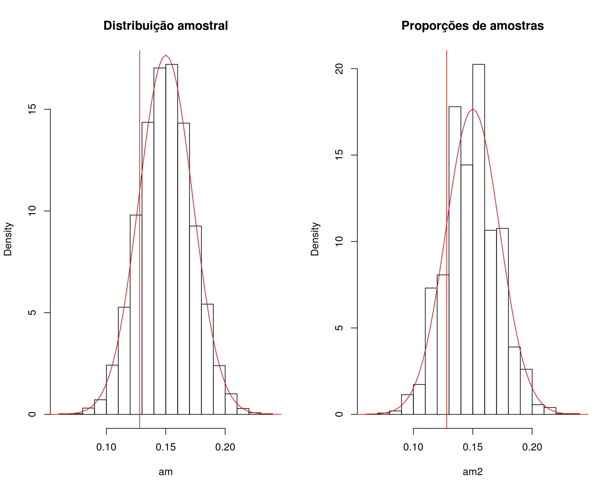
par(mfrow = c(1, 1))
## p-valor empírico
sum(am <= theta.hat)/N
# [1] 0.1641
sum(am2 <= theta.hat)/N
# [1] 0.1855
## Padroniza a distribuição para N(0,1)
zpad <- (am - theta0)/sqrt((theta0 * (1 - theta0))/n)
hist(zpad, freq = FALSE)
curve(dnorm, -3, 3, add = TRUE, col = 2)
abline(v = zcalc, col = 2)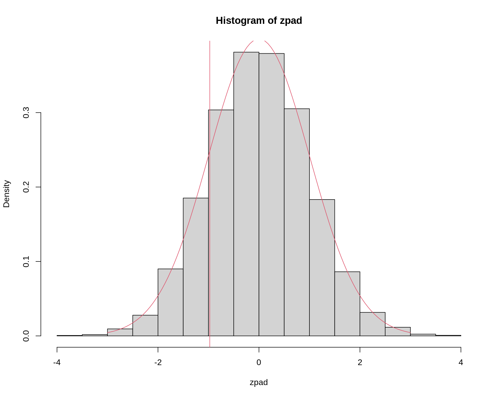

Este conteúdo está disponível por meio da Licença Creative Commons 4.0